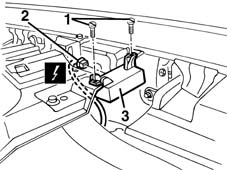

5580E30 receiver for car alarm remote control - r r
- Path
- Procedures > 55 ELECTRICAL EQUIPMENT > 5580 SPECIAL ACCESSORIES > 5580E ANTI-THEFT DEVICE > 5580E30 receiver for car alarm remote control - r r
- Kind
- repair procedure (removal / refitting; the operation number is the code)
- Applies to
- all engines; all production periods
- Interactive page
- https://sloeber94.github.io/elrnDB-fMltpl/en/#/2891989
Applies to: all engines; all production periods
 Removing
Removing
 Refitting
Refitting7040A09 passenger air bag compartment cover - r r
7040A96 facia glove compartment flap (1) lh or rh - r r (right and left)
5580C26 LOCK BARREL KEY/SWITCH for deactivating passenger 'AIR BAG - R.R.
7040A44 facia lh side cover - r r
7040A45 facia rh side cover - r r
1. Undo the bolts.
2. Disconnect the electrical connection for the receiver.
 | Name | Connector |
|---|---|---|
2 | Alarm remote control receiver |
3. Recover the receiver.

Applies to: all engines; all production periods
Refitting
RemovingCheck that the receiver is not damaged.
Connect the electrical connection.
Fit the receiver and fix it using the bolts.
7040A45 facia rh side cover - r r
7040A44 facia lh side cover - r r
5580C26 LOCK BARREL KEY/SWITCH for deactivating passenger 'AIR BAG - R.R.
7040A96 facia glove compartment flap (1) lh or rh - r r (right and left)
Connect the battery.
Check the operation of the system using the Examiner or the other diagnostic equipment.
Topics linked from this page (7)
- 5580C26 LOCK BARREL KEY/SWITCH for deactivating passenger 'AIR BAG - R.R.
- 7040A09 passenger air bag compartment cover - r r
- 7040A37 fuse box cover - r r
- 7040A44 facia lh side cover - r r
- 7040A45 facia rh side cover - r r
- 7040A96 facia glove compartment flap (1) lh or rh - r r
- M35 Alarm remote control receiver